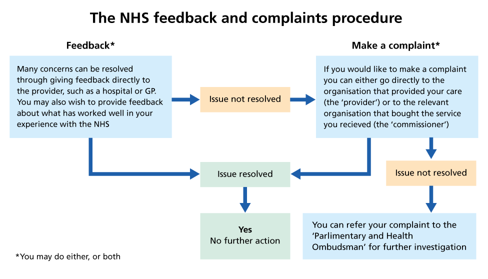

- women with a learning disability die on average 29 years before other women, and for men it is 23 years earlier
- people with a learning disability are four times more likely to die from causes that were treatable with good-quality healthcare
- 70% of autistic people develop mental health problems at some point and suicide is a leading cause of premature mortality
- people with autism, a learning disability or both face additional social and communication disadvantages
- families often need to play a particularly important role in advocating for their loved ones and also have a right to be involved if the person wishes or is under 16
- hospital scandals at Whorlton Hall, Winterbourne View and others have highlighted how vulnerable people can be to abuse
- people with a learning disability or autism can face health, education and social care inequalities that make people more vulnerable to a wide range of abuse, exploitation, radicalisation or serious violence
- people with autism or a learning disability may be over-represented in vulnerable groups such as victims of hate crime, cuckooing, county lines and homelessness
- to empower people to speak up if there is a problem which affects their health or a loved one’s health, care or education
- to improve people’s understanding of how to give feedback, raise concerns and complain
- to improve the way organisations ask then listen and act on feedback, concerns, complaints and safeguarding issues
- all of this will make it easier for people to have their voices heard and for concerns big and small to be dealt with well
Ask
- the organisation asks people about their experiences, and makes it easy for people to share them by making the reasonable adjustments needed
- the organisation makes sure that the person, their family or advocate know how to give feedback, raise a concern or make a complaint
- and that people feel able to speak up when they have feedback, a concern or complaint
- everyone knows when a concern or complaint is a safeguarding or a criminal issue, and what must happen
Listen
- the organisation really listens to what has been said and is not defensive
- the organisation and staff have the skills to listen and understand what it feels like from the person’s perspective
Do
- the organisation does something positive about it in good time and says what it is doing to put it right, in a clear way that is right for that person
- the organisation learns from the concern or complaint and changes things so the service can improve
- the organisation proactively looks at ways to improve by working with the people that use services, listening to and learning from their experiences – in co-production
- the NHS Constitution, equality and human rights laws say everyone has the right to good quality services, person-centred care and support
- it means doing things differently for people with a learning disability, autism or both – so people of all ages have the best chance of good outcomes and equal access to services
- you can’t do this if people are not understood, listened to, or able to raise a concern, complain or influence services
- this creates health and social inequalities – poorer health, shorter lives, harm or injustice leading to safeguarding risks and criminal issues
- it is your legal, public duty to stop this from happening
Principle 1
The NHS has a duty to each and every individual it serves and must respect their human rights. At the same time, it has a wider social duty to promote equality through the services it provides and to pay particular attention to groups or sections of society where improvements in health and life expectancy are not keeping pace with the rest of the population.
Principle 4
NHS services must reflect, and should be coordinated around and tailored to, the needs and preferences of patients, their families and their carers. Patients, with their families and carers, where appropriate, will be involved in and consulted on all decisions about their care and treatment. The NHS will actively encourage feedback from the public, patients and staff, welcome it and use it to improve its services.
"We ensure that compassion is central to the care we provide and respond with humanity and kindness to each person’s pain, distress, anxiety or need… We find time for patients, their families and carers, as well as those we work alongside…"
"We maximise our resources for the benefit of the whole community, and make sure nobody is excluded, discriminated against or left behind."
"We put the needs of patients and communities before organisational boundaries."
Equality Act 2010 – Section 149 public sector equality duty to consider all individuals in eliminating discrimination, harassment and victimisation Also to make sure people with a protected characteristic have the same opportunities as other people.
The Human Rights Act 1998 protects everyone in the UK. People with a learning disability or autism who are subject to detention may be particularly at risk of having their human rights infringed.
See the resource for organisations for these and other legal and statutory duties.
Ask Listen Do is in the CQC Inspection Framework, is recommended practice in the NHS Learning Disability Improvement Standards and other areas of work.

The NHS feedback and complaints procedure
Download PDF
- there are separate processes for complaints and safeguarding
- make sure these processes are clear and everyone understands them
- make sure people have information in a format that works for them
- a safeguarding process must not be held up by a complaints process
- a concern about someone’s safety may be a safeguarding matter. If so, follow your organisation’s safeguarding procedures without delay. This does not stop a concern or complaint being raised too
- be clear with the person and/or family about this
- when you report a safeguarding concern, say if it is being reported as a concern/complaint as well
- the person raising a concern can also refer a safeguarding concern to the local authority safeguarding team themselves
- treating everyone the same
- ticking a box e.g. “we have a comments and complaints system”
- putting in a ramp
- regulators like CQC saying we are OK
- although these are all important too
It is about human rights, quality of life and making reasonable adjustments
Think of it as a conversation.
Talk to someone before it becomes a complaint.
Know when something is a safeguarding issue and respond appropriately.
Sometimes it’s just about being able to give feedback or enabling someone to ask questions.
- use the resources and involve people and families in training your staff
- ask a leader in your service/organisation to be a champion for Ask Listen Do
- find out about and make reasonable adjustments – each person is different
- meet and work with people and families when designing or reviewing services
- give people time and communicate clearly
- always assume capacity or that best interests processes are followed
- ask the person if they would like a family member or advocate to support them
- be welcoming, sympathetic and pro-active about how you seek feedback, respond to concerns and handle complaints
- keep people informed throughout
- use the Accessible Information Standard
Ask Listen Do – Information for organisations and practitioners
Ask Listen Do – making feedback, concerns and complaints easier in health, education and social care
NHS England » Care, Education and Treatment Reviews (CETRs)
STOMP – stopping over medication with psychotropic drugs
Contents